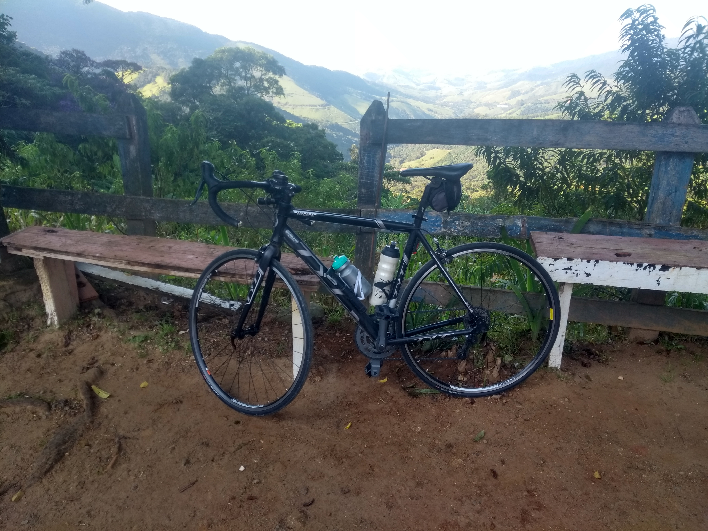
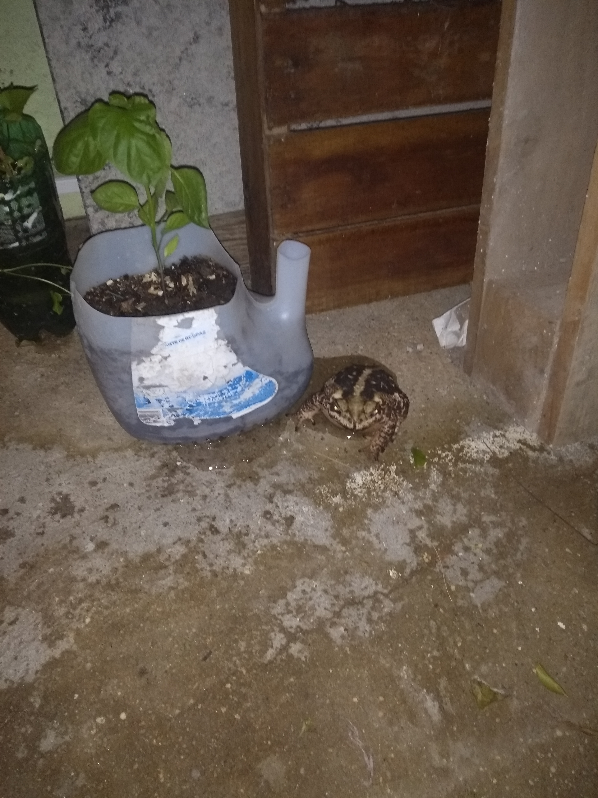
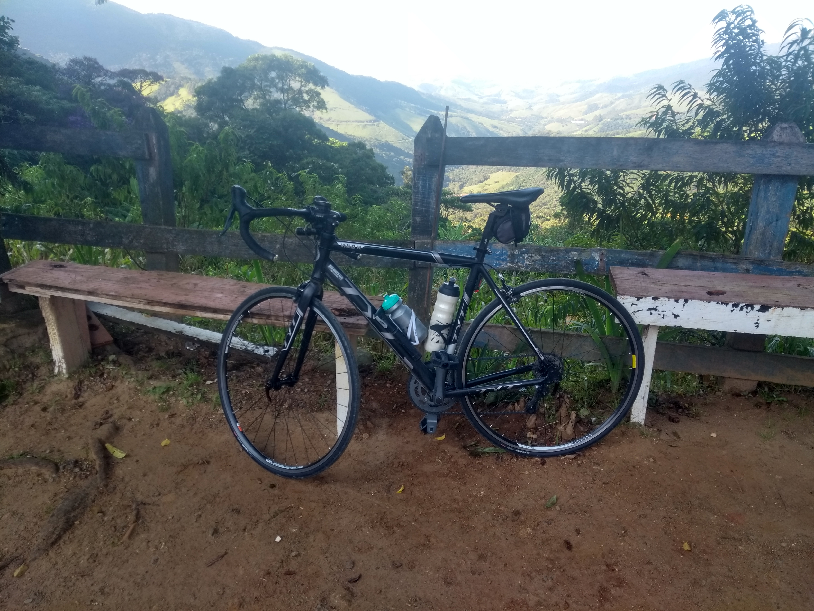
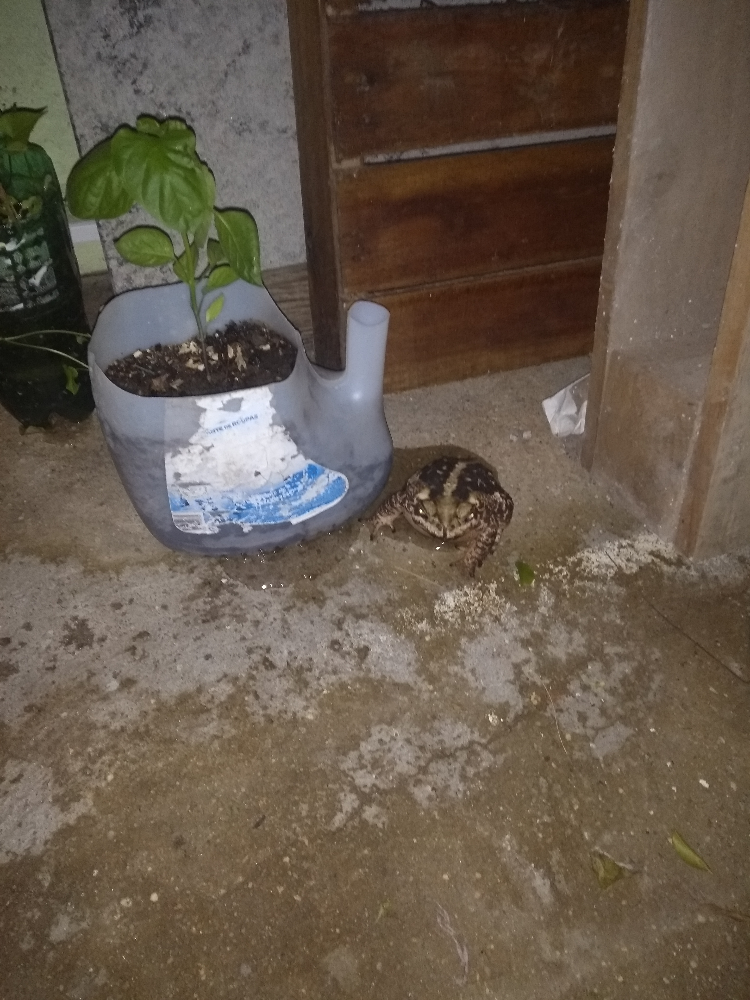
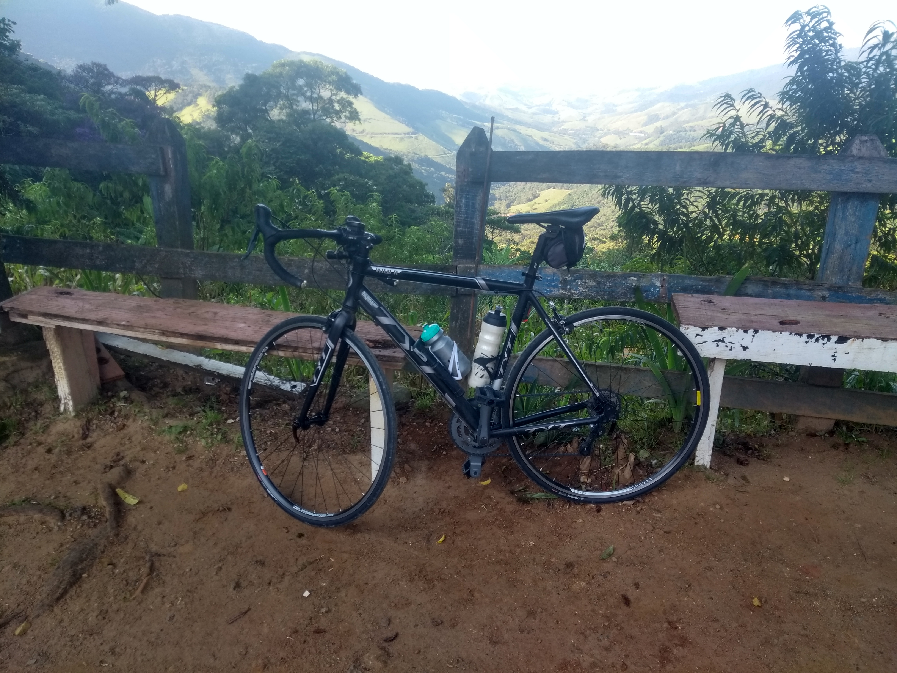
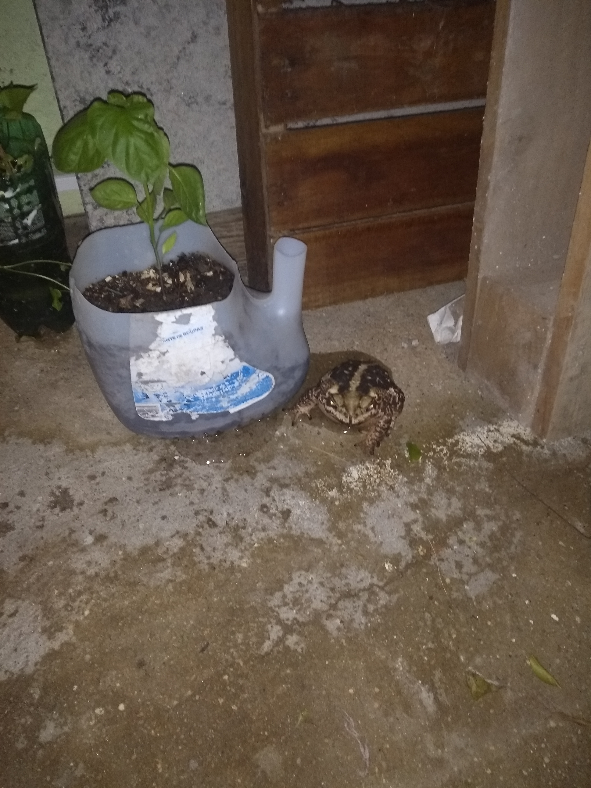

Minha terra e minhas coisinhas
 



Sou brasileiro, nascido em 1983(tire suas próprias conclusões kkkkkkkkkk), em Cachoeira Paulista, Vale do Paraíba (abaixo) , interior de São Paulo. Lugar onde moro atualmente.
Sou uma pessoa caseira, gosto muito de assistir filmes e séries. Mas quando é para sair, gosto muito de viajar e conhecer lugares, se possível, com minha magrela!!

